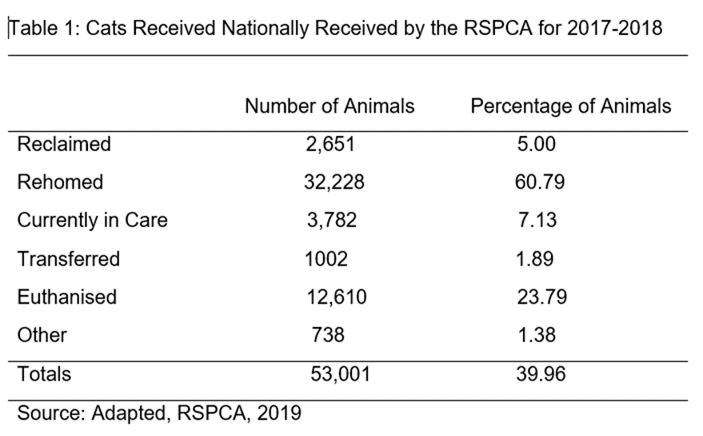

I was born in Adelaide South Australia. My mother was born in the UK she was raised in India, my father was born in Switzerland he was Swiss French, my culture is mainly British despite the cultural diversity. I completed year 11, Cert 2 and 3 in security, Cert 2 in fitness and did a diploma in IT. One of my hobbies are Tarantula keeping. I had kept thirty different species of Australian Tarantulas. I started a group in Facebook for reptile's invertebrate’s and amphibians. I have a cat her name is Bella I raised her from a six-week-old kitten. In my spare time I do weight training, cycling, reading and playing sims 3 on pc.
My interests in IT are Security, AI, AR/VR, robotics and web development. Where did my interest start? My interest in IT started when I was eleven when I bought my first ever pc, it was 286 Intel Pentium. I was interested in the components and wanted to learn how it all worked. Was there an event or person that sparked an interest in IT? A friend in Melbourne sparked my interest further, he worked for NEC and used to speak to me about IT and his job. He often talked about his courses with Microsoft. I was amazed how he was able to solve a problem I had on my laptop and thought to myself I would love to do what he does. The only experience I have had is with my own pc, using email, social media, video chat, various tools, apps and Diploma of IT. I have never worked in the IT industry.Why did I choose to go to RMIT? I enrolled online to Open Universities Australia, which placed me into RMIT, I am happy that I am in RMIT as I heard positive feedback about the University. What do you expect to learn during your studies? I only expect to learn the foundation of IT, looking at the various topics covered in the course. Which will help me decide which path I want to take.
In this role, it is required that the ICT support officer must display a high quality of customer support, to ICT system users by remote technologies. Offering onsite support for both level 1 and 2 incidents. They need to be able to seek, understand the needs of the customer, to be able to document and solve issues conforming with the service level agreements. The ICT support officer will have the responsibility of closing tickets that are logged (IT tickets are used to keep record of work performed or work needing to be done by your IT support company, fix issues and resolve user requests). Within the IT service management life cycle, delivery and user training. This position also asks of the ICT support officer to create documentation and to be able to identify areas of improvement. The company is asking that the ICT support officer to be decisive of the needs of the customer, to enhance and further increase the quality of the customer ICT experience.
This position is appealing because your offering customer support. I have found this role interesting for myself as it’s a good starting point into the industry of IT, as it is offering onsite support for both level 1 and 2 incidents and working in customer service.
Tertiary/ Industry certifications or accreditations related to information Technology or equivalent experience. Customer service skills, the ability to work in a team environment, flexibility, willingness, hardworking, problem solving skills, good listening skills, commitment to helping others, empathetic approach to clients, knowledge of emotional and practical difficulties of clients and good communication skills.
The skills I currently have are good work ethics, determination, the ability to work in a team, good communication skills, problem solving capabilities, willingness to learn and good listening skills. My qualifications are in customer service, cert 2 and 3 security, diploma in IT, which I almost finished but the government sector closed them down before I got to finish it. The current experience I have in IT are using OS, applications, internet, tablets, smart devices, basic maintenance, installing software. I worked mainly in customer service as a sales representative, prior to that I worked as a security officer for 6 years. Onsite CCTV monitoring, working as a static security guard at the Melbourne docklands inspecting suspect containers and working at my local hospital in emergency keeping hospital staff safe from violent patients.
The goal is to complete the Introduction to Information Technology course this year and to start the bachelor’s degree in information technology in 2020 as a start. From the requirements for the position it only mentions tertiary level/accreditation. As added skills I am aiming to get a driver license and Microsoft accredited.
As an individual my personality is ISFJ-T which means I prefer to study in a quiet environment, I prefer to hide my anger than show it, I prefer texting to calling, I see beauty in simplicity,I have little interest in going into politics. Out of this personality test; I am sensitive, emotionally expressive, empathic and less competitive. I would rather focus on social harmony and cooperation. As judging individuals, we are decisive, thorough and highly organized. valuing clarity, predictability and closure, preferring structure and planning to spontaneity. Being turbulent, we are self-conscious, sensitive to stress, success-driven, perfectionistic and eager to improve. My best method of learning is visual and auditory. Which means for me I acquire knowledge effectively with visual and hearing. Kinaesthetic learning was quite low in other words learning through a physical activity is significantly lower.
These results will give me more insight on myself, letting me look at aspects that need improving. They help me strengthen certain traits suited for the group environment, by channeling in a way that’s needed. The online results give a guide to adapt in a team. Utilise strengths that another might not have
In order to take this into account you need to get to know your team. Roles and responsibilities need to be designated appropriately. Knowledge of the team will enable them to function more affectively. This is considered when there is an understanding that everybody is different and works differently.
In this report I will be writing about my project idea Save A Cat application. Such as the ability to link the person to the right cat for them, by matching their personality with theirs by information stored. I will be discussing my motivation for coming up with the idea of this application, along with a detailed description, obstacles that I expect to encounter, potential drawbacks, tools, technologies and skills required followed by a topic of outcome.
The motivation around this project is; that I have worked closely with cat rescue organisations. I have seen first-hand the topics that I have discussed in this section. Frequently a cat is mismatched with an owner, which often results in the cat being abandoned, euthanised or returned to the rescue organization. Older cats that are rescued can often end up in families with young children, which is often not in the best interest of the older cat. A new owner can often lack skills in dealing with a rescue cat, not understanding the need for patience. With this application, matching the potential cat owners with a compatible cat. My goal is to lessen the chance of mismatched ownership (Finlay 2019).
The cat adoption application would be designed to match the owner to the cat listed on the app. There will be a listing for all cats in the region you are in, which rescue they belong to and where they are located. There will be background information on the cat, personality, health issues if any, a login to store information about your cat, vaccination details, microchip number, and veterinary details. There will be stored files about adopting a rescue cat and what to expect, listed contact numbers of the rescues and having the options of making an appointment to meet the cat at the rescue through the app. This app will be encrypted as there will be personal information on the owner as well as the rescue organization. The application itself will be designed having colour layout, font style, images added, PDF files, borders, and a search engine so the user can search information if need be.
You should need the TLS/SSL encryption with solid algorithms within communications. A mistake that can be made is unencrypted connections from the app to a third-party app development company. Poor Authorization & Authentication; These weaknesses are mostly on the server side. The safest practices that you should follow are the same with web apps. Especially for app development, device identifiers ought to be ignored since devices can be removed and interfered with (bit mascot, 29.09.16).
This category has consisted of a broad diverseness of input strikes against the application itself. General best practices for reduction of client-side injection drawbacks cover the input validation of the app entry points, on the server side. To avoid this, you should use parameterized queries, disable file system access for Web views, JavaScript, and plugin support for Web views (bit mascot, 29.09.16).
While session-handling mechanisms are largely applied at the server side of apps, secure session management practices can be used in devices themselves. The Confidentiality & Integrity of session tokens should be preserved via TLS/SSL connections. Like authorization & authentication, device identifiers should be avoided here as well, and you should execute safe mechanisms to cancel a session on lost devices (bit mascot, 29.09.16).
While these issues primarily affect Android-based apps, there has been a case in point for iPhone apps too. Usually and especially, output escaping, authorization controls, input validation and canonicalization should be carefully analysed. Also, you should take extra care when to accept and validate URL schemes (bit mascot, 29.09.16).
This consists of data exchange that normally maximizes the app performance. As with Weak Data Storage, you should develop your app under the premise that the device might be taken. The application should be dynamically examined in order to prove that it does not leak the data while runtime (bit mascot, 29.09.16).
There are lots of that people forced to install from the play store due to hidden identity wrapped inside the application. While there is a Google Bouncer opens at the play store to auto detect and block any type of Malware, but it fails to do. So, to assure a good app, developers must check if the app contains any malware or not. Also, there are lots of free as well as paid Anti-Malware apps available to preserve you from the hateful application (bit mascot, 29.09.16).
For me to turn this idea into something real and marketable, funding is required. Developing an app is expensive, as the cost of development can be anywhere from $3,000 to $150,000, depending on the application. There are other options of funding such as; crowdfunding via platforms like Kickstarter, AppBackr (bit mascot, 29.09.16).
Is the leading cross-platform mobile application development framework which is based on JavaScript and HTML5 for creating universal mobile apps. It provides 50 built-in UI components that let you create impressive apps on Android platform. The apps built in Sencha are featured with fluid animations, adaptive layout engine, and smooth scrolling that respond instantaneously to all user actions (Impinge solutions 2005-2017). The benefits of HTML5 are clean codes, integrated audio/video playback, cross-compatibility for web browsers, offline caching, smartphone optimization (Mark-up-box, 2006-2019). JavaScript is a client-side language, easy language to learn. Offers extended functionality to web pages. JavaScript is also a program that is self-governing (Mark-up-box, 2006-2019). The hardware that is required, is PC or laptop, Internet, modem and Wi-Fi. The software that is needed; HTML editing, JavaScript, CSS and a cross-platform mobile application development framework such as Sencha Touch 2. Software can be purchased online with licensing and downloaded online. (Mark-up-box, 2006-2019)
Learn new programming languages. Learn clean coding guidelines for Android, because it's difficult to maintain the standard coding guidelines of Android. Be realistic, as a developer, you should start spending some time on learning and understanding user interface (UI) and user experience (UX) design as well (Roy, A, 2015 – 2019). There are some fantastic courses online to learn app development, it is just a matter of sourcing that information. Udemy not only opened a variety of courses but also opened teaching opportunities. There are Android Development Courses on Udemy, as well as Android Development Courses on Udacity (Liu, T, Feb 11, 2018).
To consider the outcome of this project successful, the application needs to be fully functioning, with all the app features running smoothly and the cat and owners’ personalities correctly matched. Having the application be successful will mean increasing the success rate of cat rehoming. This will make a big impact on the home environment, if the owner and cat are matched, it means the cat will transition into the home environment a lot more smoothly. The owner will not have to go through the stresses of having to find the cat a new home and the cat will not have to go through the stresses of being rehomed (Finlay 2019).
bitmascot, 29.09.16, blog,Top 10 Challenges Faced by Mobile App Developers accessed 07/12/2019,
http://www.bitmascot.com/top-ten-challenges-faced-mobile-app-developersFinlay, K, October 31,2019,article Why an Adopted Cat May Be Returned to the Shelter, accessed weblink 6/12/2019,
https://www.hillspet.com/cat-care/new-pet-parent/reasons-adopted-cats-are-returned-to-sheltersImpinge solutions, article, 7 Best Frameworks for Developing an Android App, accessed 7/12/2019,
https://www.impingesolutions.com/7-best-frameworks-for-developing-an-android-app/Liu, T, Feb 11, 2018, article,10 Best App Development Courses for Beginners and Get a Job, accessed weblink 7/12,2019,
https://medium.com/@tristaljing/10-best-app-development-courses-for-beginners-and-get-a-job-d84dbf34b101Mark-up box, 2006-2019, blog, Top 5 Benefits of Using HTML 5 Development Framework, accessed weblink 7/12/2019,
https://www.markupbox.com/blog/top-5-benefits-using-html-5-development-framework/Mark-up-box, 2006-2019, blog, Top 9 Advantages of JavaScript, accessed weblink7/12/2019,
https://www.markupbox.com/blog/advantages-of-javascript/Roy, A, 2015 – 2019, article,How to become a better Android developer: 30+ bite-sized pro tips, accessed weblink 7/12/2019,
https://techbeacon.com/app-dev-testing/how-become-better-android-developer-30-bite-sized-pro-tipsRSPCA, 2019, article, Annual Statistics 2017-2018, accessed weblink 7/12/2019,
https://www.rspca.org.au/sites/default/files/RSPCA%20Australia%20Annual%20Statistics%202017-2018.pdfTechopedia, article, What does Out-of-Band Authentication, accessed weblink7/12/19,
https://www.techopedia.com/definition/29532/out-of-band-authentication-ooba